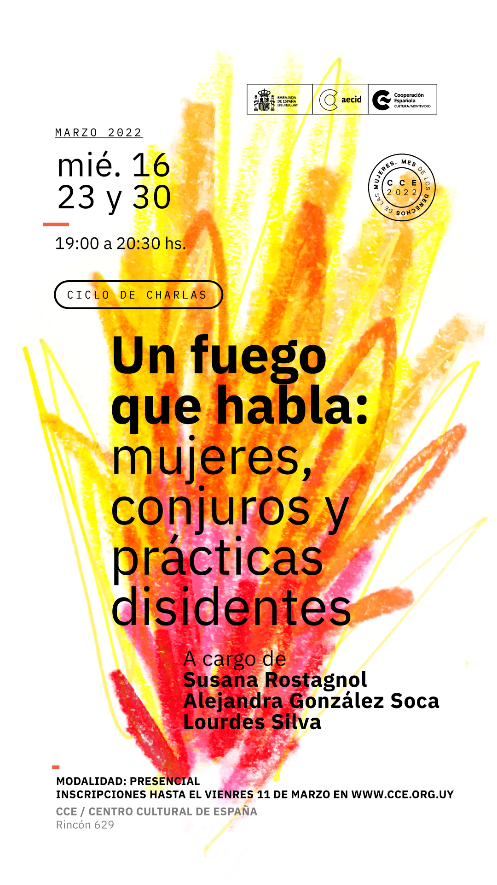

Harto_estudio
Somos un buró de producción cultural. Operamos en la intersección entre la precisión clínica de la cuadrícula y la energía cruda del mundo físico.
La oficina es el pilar de nuestra disciplina, proporcionando estrategia, branding y arquitectura digital para diseñar confiabilidad.
Nuestro buró es el hogar del caos, representando a artistas visionarios para crear instalaciones inmersivas y "confluencias culturales".
No solo creamos sitios web y logotipos, creamos autenticidad y diseñamos experiencias. Transferimos valor cultural.
Si quieres una plantilla, no queremos tu briefing; si quieres un mundo entero, queremos tu convicción. Nuestro emblema no son los píxeles ni el papel, sino la emoción y la memoria.




CREEMOS EN EL PODER CONMOVEDOR DE UNAS MANOS REFLEXIVAS Y EN LA ESCALA MONUMENTAL DE LA FRONTERA DIGITAL
Creado por artistas.
Completado por vos.